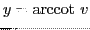
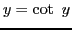

Next: Differentiation of Up: Rules for differentiating standard Previous: Differentiation of Contents Index
Let
; then
.
This function is defined for all values of  , and is many-valued.In order to make it single-valued, only values of
, and is many-valued.In order to make it single-valued, only values of  between 0 and
between 0 and  are considered;
that is, the smallest positive arc whose cotangent is
are considered;
that is, the smallest positive arc whose cotangent is  .
.
Following the method of the last section, we get